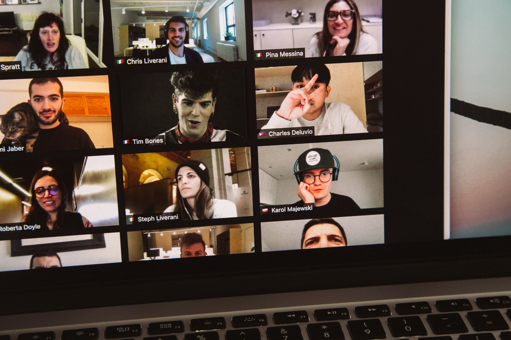

Impact of Technologies on an individual's daily life
Technology has never been this advanced. From messaging colleagues to travelling on autonomous cars, in this day and age, the world is heavily dominated by technology. The field of technology has been progressive to such an extent that most business and manufacturing companies today, are integrated with automation to optimize time consumption along with enhanced production. Amongst any other technologies, internet technology has contributed the most to revolutionize the world.
A decade or two in past, people sat in front of TV to watch different programs, while today, almost all of us carry on-demand-handheld TVs in our pocket which allows us to watch shows and movies irrespective of time and place. These flexibilities are the prime factors which contributed for the shift of preference of people from TV channels to sites like Netflix.
With the advancement of Internet and communication technologies, people around the world can have conversation, share ideas or conduct a meeting with just a few convenient clicks, or taps if its a touch screen device. There are various software applications online, which helps people gather virtually, helping students to collaborate on a project, allowing people to conduct meeting and many more, despite being at different locations around the world. In fact, these features of internet technology have helped institutions around the world to consistently conduct their lectures or classes online, even in the period of pandemic such as covid-19.
Technology has completely changed the way we had been learning in schools and colleges. Previously we hate to take a bag full of book, copies and other instruments to school while today, we simply carry a laptop which can store millions of books. Apart from academic institutions, on this day, learning has been easier and simpler than ever before. With the access of internet-a powerful tool, anyone can possibly learn anything online, through multitude of resources, without having to ask someone on phone or seek help in person. Instead of searching for pages in a dictionary, we simply lookup anything online as Information about any particular thing can be found on the internet, which has slowly replaced dictionaries. Accessing information for people today is way quicker and easier than before as search engines like google and Bing provide any searched information in milliseconds.
Convenience is what people desire and internet has fulfilled it in every way possible. Newly developed mobile banking and e-banking applications has made it possible to perform any transaction online. Again, with this flexibility, people can pay bills or transfer money form any place and anytime. Online banking would have been impossible to think about a few decades ago, when people could only perform transactions from banks, and that too within a specified time. Furthermore, internet has provided a platform for e-commerce and online trading business with which people can literally purchase anything online and get them delivered to their houses. In these ways, internet has simplified an individual’s life as now, a person does not need to travel constantly to run different errands and thus, can save time.
2021 May 27, Regan Raj Maharjan
comment
recent posts
How i learned coding online

Learning flamenco guitar

sports vs esports